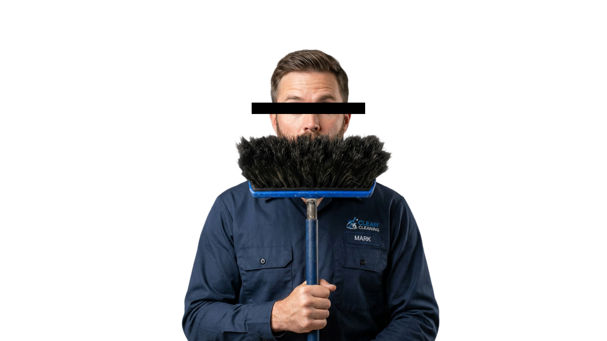
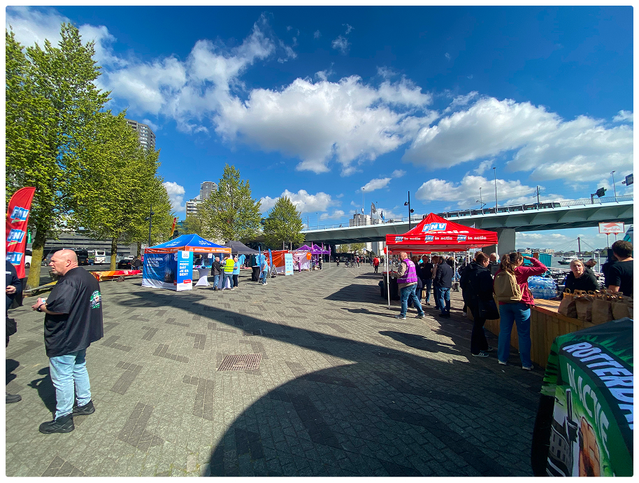
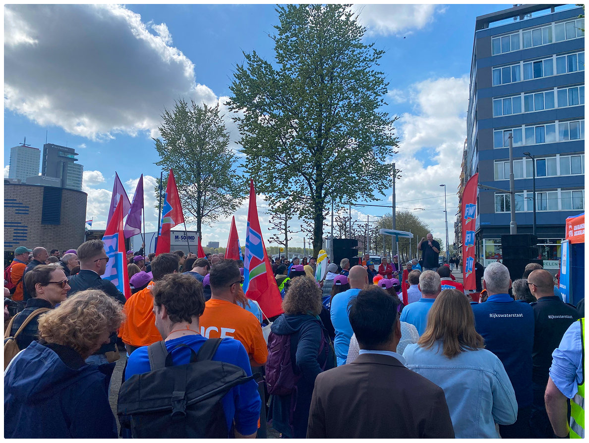
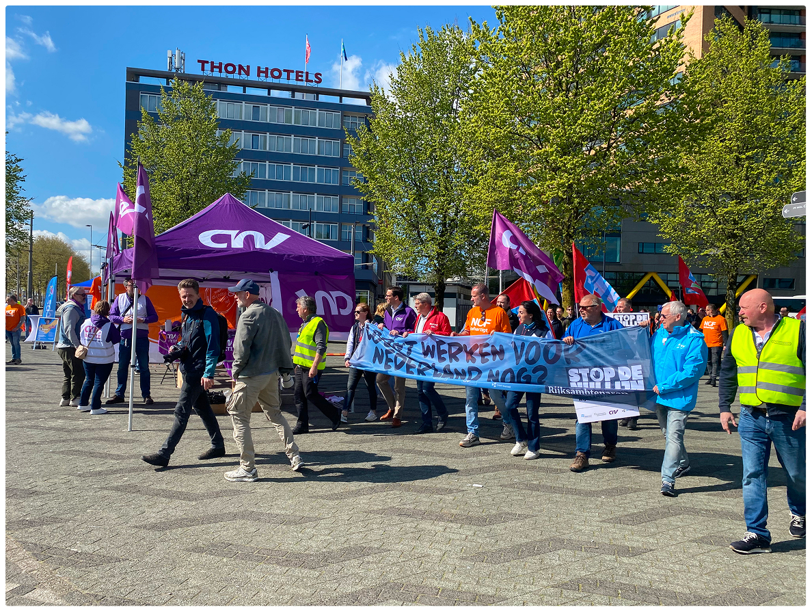

Portrait: hero.jpgA continuous feedback system that carries frontline employee voices to the negotiation table.
The Ministry of the Interior (BZK) wants CLA negotiation to represent its entire workforce, including the “small voices” in salary scales 1-6.
Lower-income employees remain disengaged and unheard in Collective Labour Agreement (CLA) negotiations. Current feedback channels fail to reach them within their specific work environments.
The disconnect makes participation feel irrelevant or futile, so their needs stay unrepresented, and the agreements that follow do not reflect the realities of the entire workforce.
We mapped the CLA system through desk research, then tested our assumptions with employees on the work floor.
Desk research into the CLA ecosystem, stakeholder mapping, and field research at the 14 April strike and on campus.
A COM-B diagnosis, How Might We questions with the assumptions behind them, and the problem reframed.
Three strategic directions, AI-assisted ideation and concept prototypes.
Seven rounds of validation with 16 employees, ending in one connected system instead of a set of separate touchpoints.
We tried the channels the system already uses. Almost nothing came back.
Sent through employer and government channels
Posts in subreddits to recruit scale 1–6 staff
From the 14 April strike in Rotterdam
At the strike, the same people talked to us openly for as long as we wanted. They weren't unwilling to speak. They just weren't going to do it through a form.

Field photo 1
Field photo 2
Field photo 3The feedback system was designed for an employee who doesn't exist on the work floor.
Scales 1–6 are cleaners, security staff, transport workers and facility staff, and most of them are out in the field rather than at a desk.
Source: Functiegebouw Rijksoverheid ↗
Often no fixed workstation: work moves between sites, vehicles and shifts
Shift work, with few quiet moments to stop and fill in a form
Mostly a personal phone, often without easy access to work email or the intranet
Often Dutch as a second language, so long written surveys become a barrier
A fixed desk with a computer, where surveys arrive by email
A quiet half hour in the working day to complete a survey
Reliable connectivity and institutional channels at the desk
Dutch as a first language, at ease with long written questions
Access is only the first barrier. We used the COM-B model to ask why scale 1–6 employees don't take part, and found all three barriers sit in the process, not the people.
The channels don't fit the working day, the device or the language.
Work feels transactional, and nothing visibly changes when people speak up.
Input is only possible once every 18 months, while problems come up all year.
Source: The Decision Lab, The COM-B Model for Behavior Change ↗
Joseph Rowntree Foundation, 2015 ↗
Voices from the field confirm the barriers COM-B identified.
We spoke to 12 scale 1–6 employees within the Rijksoverheid and 4 lower-wage employees from the TU Delft campus area.
Ik kan me echt niet herinneren dat ik ooit zo'n vragenlijst heb ingevuld.
“I can't recall whether I ever filled in such a survey.”
Ze zeggen het is anoniem maar dan sturen ze toch een vervolg email van vul het eens in. Dan denk ik van hè: er klopt hier iets niet.
“They say that it's anonymous, but then you receive a follow-up email reminding you to ‘fill in the survey’. That's where I think: something's not right here.”
Ik krijg probleem dan kom ik X of Y (collega's).
“When I get a problem, then I go to X or Y” (co-workers).
This wasn't a group that wouldn't participate. It was a system that hadn't been built for them.
No single intervention could close the gap we found. Three strategic directions emerged, each aimed at a different part of the system.
Rebuild the way employees give feedback.
Possible interventionsA new role on the work floor that helps build trust in the system
Design beyond gathering data: shape how feedback is used at the discussion table.
Possible interventionsMake the feedback process visible to employees, so it no longer feels like a black box
Build the shared institutional voice that doesn't exist yet.
Possible interventionsCommunication in several formats that closes the feedback loop